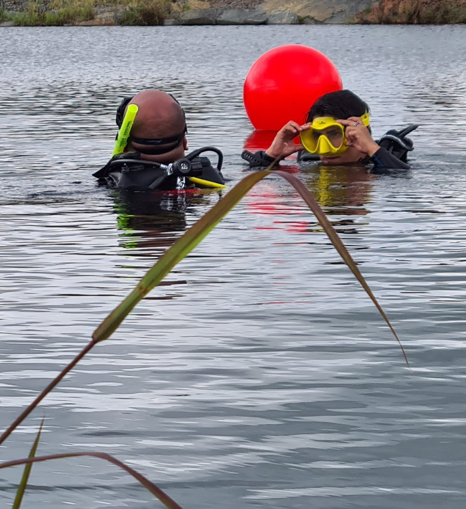

La aventura comienza aqui
Comenza este camino del buceo con el curso Inicial "Open Water Diver", segui luego "Advanced Open Water Diver" y culmina con el curso mas divertido de todos: "Rescue Diver"

Card Especialidades
Ya sos buzo certificado? Tenemos mas opciones para que sigas aprendiendo:
- Deep Diver
- Solo Diver
- Sidemount
- Naufragios
- Dry Suit
- Nitrox

Convertite en Profesional!
Tu camino profesional, arranca aqui. Convertite en Divemaster, Assistant Instructor o Instructor de Primeros Auxilios.
Snorkeler
Es una actividad genial para las vacaciones, permite observar peces y arrecifes cerca de la playa, podes encontrarte con estrellas de mar o pulpos. Este deporte te permite acercarte a la vida subaquatica de una manera segura.